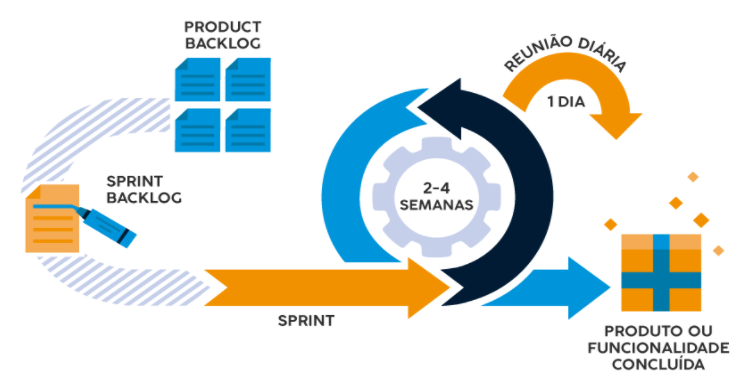

O que são processos de software e onde entra o Scrum?
Introdução
No desenvolvimento de produtos de software, as empresas, stakeholders e os times de desenvolvedores buscam maneiras mais otimizadas de entregar produtos com qualidade em tempo hábil. Assim, busca-se uma abordagem mais incremental onde a evolução do software é contínua porém ágil. Para isso existem normas como a ISO 12207 e maneiras de organizar projetos como o Scrum. Ambos serão abordados neste texto.
Processos de Software
A ISO 12207 é uma importante norma que serve de referência para o desenvolvimento, aquisição e processos de software. Ela pode ser utilizada para definir os processos para que o software seja desenvolvido com qualidade. Essa ISO considera o software como sistema, e seu escopo é: Sistema de Software; Aquisição, fornecimento, desenvolvimento, operação, manutenção e descarte.
O processo é um conjunto de atividades integradas que transformam entradas em saídas e possui algumas características:
- Deve ter um objetivo;
- Valor de saída para a organização e sua importância;
- Possui um cliente;
- Pode cruzar fronteiras organizacionais.
A Norma não especifica estágios, modelos de ciclo de vida, os passos que devem ser tomados, ferramentas ou artefatos que serão utilizados. É necessário a adaptação para a utilização dela. Existem dentro dessa norma, quatro grupos de processos: Processos de acordo que tratam dos acordos que a empresa fará sobre o software; Processos organizacionais habilitadores do projeto que tratam das atividades que a empresa tem ao organizar profissionais em equipes para a execução do projeto; Processos de gerência técnica que tratam da gestão dos projetos; Processos técnicos que habilitam processos relacionados ao desenvolvimento, teste, implantação, requisitos do projeto.
Scrum
O Scrum se apresenta como um Framework para gestão e organização. Ele é bastante utilizado para o desenvolvimento de software. Apresenta uma abordagem interativa e rápida. Ele possui três pilares fundamentais: Transparência, que define que os critérios e resultados devem ser compartilhados; Inspeção que define que os artefatos gerados e os progressos sejam frequentemente consultados; Adaptação, cujo o objetivo é tornar os processos mais adaptáveis aos imprevistos
A seguir é mostrado uma visão geral dos eventos e artefatos do Scrum. Os artefatos são Product backlog (backlog do produto), Backlog da Sprint e o Produto Concluído. Os eventos são Planejamento e Trabalho de Desenvolvimento, Revisão da Sprint e Retrospectiva da Sprint. 
- O Backlog do produto é uma lista ordenada dos requisitos que é continuamente atualizado pelo Product Owner, que representa o stakeholder;
- Planejamento da Sprint define o que deve ser entregue, as metas, como o trabalho será feito e redefinição do Backlog da sprint;
- O Backlog da sprint possui os itens que devem ser desenvolvidos dentro da Sprint;
- O Trabalho de desenvolvimento é a fase onde o time desenvolve os itens e aplicam as alterações afim de bater as metas da Sprint;
- Dentro da Sprint existe a Reunião Diária, ou Dayle, que consiste numa reunião rápida para manter o time de desenvolvimento atualizado e ajudar no planejamento;
- Outra reunião, mas agora com os stakeholders, é a Revisão da Sprint onde apresenta-se os resultados da Sprint, os problemas e como foram resolvidos, revisões sobre produtos;
- A reunião seguinte é a Retrospectiva da Sprint, que consiste na discussão do processo entre o time para procurar uma melhoria contínua.
Dentro do Scrum, existem alguns papéis como o Product Owner (PO) é o responsável pelo gerenciamento do backlog do produto; o Time de desenvolvimento cuja a função é se auto organizar e realizar o desenvolvimento dos projetos; o Scrum master é um ajudante do Product Owner que faz a organização e suporte do Scrum dentro do time e da empresa.
A estimativa dentro Scrum não é especificada, porém cada time ou empresa pode adaptar metodologias que caibam dentro do contexto em que elas estão. Alguns métodos utilizados são Tamanho de Camisa e Planning Poker.
Conclusão
A ISO 12207 e o Scrum apresentam-se como referências para a organização do desenvolvimento de software. Contudo o Scrum não é uma metodologia mas sim um framework de gerenciamento, que não define ferramentas e técnicas específicas para o desenvolvimento do produto, mas foca em como a equipe pode tomar decisões de forma organizada e sempre incremental. Para isso é possível utilizá-lo aliado ao XP, ou Extreme Programming, que é focado no desenvolvimento de software.
OBS: Esse texto faz parte de uma série de textos que irei publicar aqui e que eu produzi durante meus estudos da disciplina de Engenharia de Software. Espero que goste.